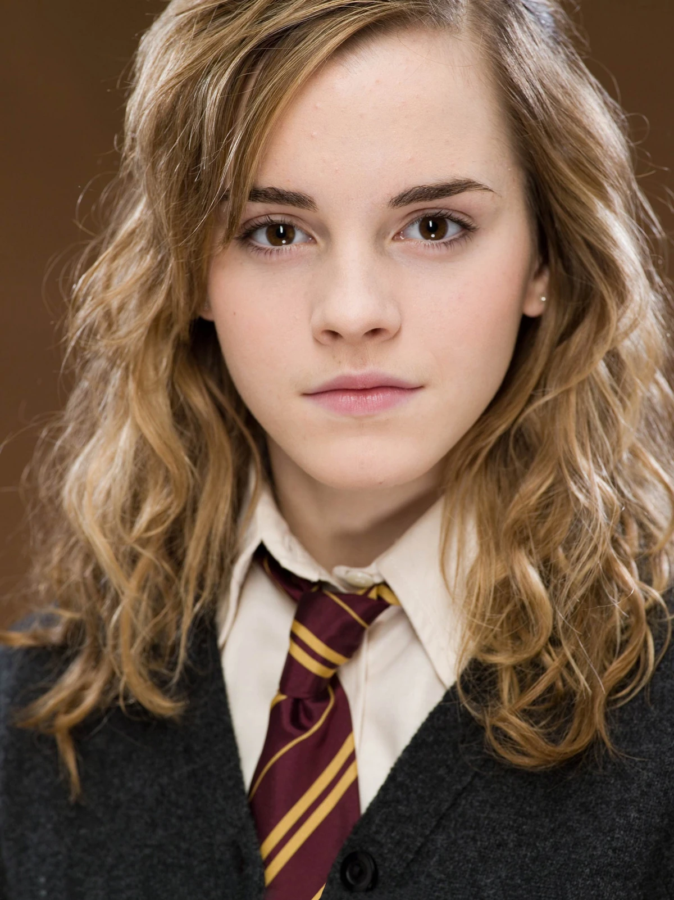
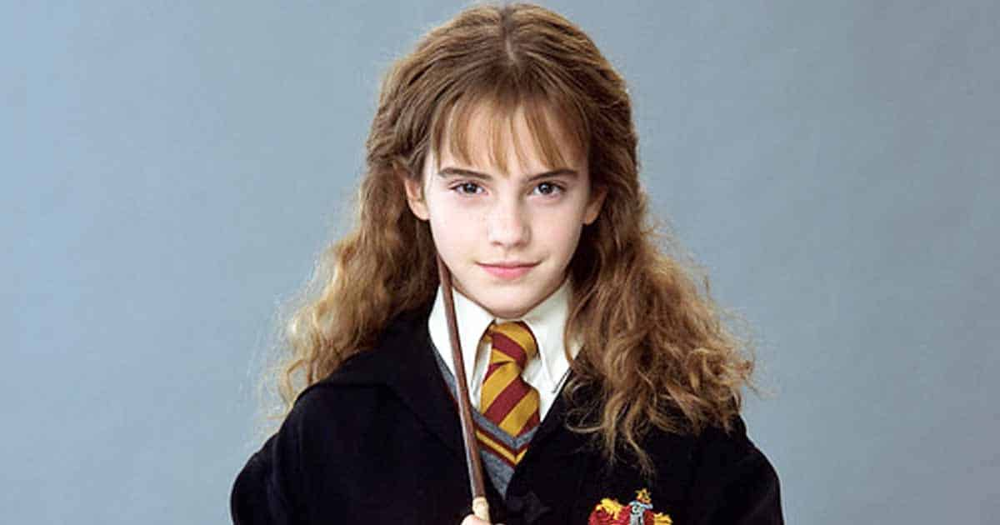

Hermione Granger
hermione
>
Minister Hermione Jean Granger (b. 19 September 1979)[1] was an
English Muggle-born[3] witch born to Mr and Mrs Granger. At the age of eleven, she learned about her magical nature and was accepted into Hogwarts School of Witchcraft and Wizardry. Hermione began
attending Hogwarts in 1991 and was Sorted into Gryffindor House. She possessed a brilliant academic mind and proved to be a gifted student in
almost every subject that she studied, to the point where she was nearly made a Ravenclaw by the Sorting Hat.
Hermione first met her future best friends Harry Potter and Ron Weasley aboard the Hogwarts Express, and initially they found her unfriendly and somewhat of an "insufferable know-it-all",
an impression reinforced by her constant correct answers and eagerness to please the professors. However, she stepped in to take the blame from the boys after they had saved her from a troll on Hallowe'en in 1991,
surprising them in a grateful way, which led to them quickly becoming friends. She later played a crucial role in protecting the Philosopher's Stone from Voldemort.

In her second year, Hermione had a key role in the discovery of the Chamber of Secrets, before falling victim to the
Basilisk unleashed upon Hogwarts following the opening of the Chamber. However, she recovered from the petrification
under the care of Madam Pomfrey with Professor Sprout's Mandrake Restorative Draught. The next year, Hermione was granted permission to use a Time-Turner from the Ministry of Magic to facilitate her volition to study
far more subjects than were possible without time travel,
